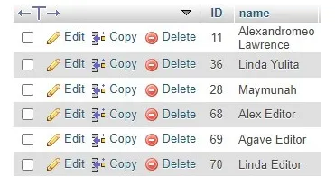

oktober 10, 2023
Menurut (Florescu D dan Fourny G, 2013) Relational Database dikembangkan Edgar Codd dari IBM pada tahun 1969. Penggunaan Relational Database sebagai basis data model saat ini telah mendominasi model lain seperti hierarchical, network ataupun object-model. Relational Database dapat diartikan sebagai sebuah basis data yang merepresentasikan data sebagai suatu kumpulan tabel dimana hubungan antar tabel juga direpresentasikan menurut value yang ada pada tabel-tabel tersebut. Struktur basis data yang baik tersusun atas relasi antar entitas yang ada dalam suatu data yang terorganisasi sehingga informasi yang tersimpan dapat diakses. Relasi database menyimpan datanya di dalam tabel yang terdiri atas baris dan kolom. Suatu baris dalam tabel dapat juga disebut sebagai record atau tuple, sementara kolom disebut field atau atribut.
Terdapat tiga jenis atribut yang digunakan pada database model relasional yaitu atribut Primary Key (PK), Foreign Key (FK), dan atribut bukan PK maupun FK. Primary Key adalah atribut atau kombinasi beberapa atribut yang memiliki nilai yang unik sehingga digunakan sebagai identifier dari baris di dalam sebuah tabel. Pada aturan model basis data relasional, Primary Key (PK) tidak boleh bernilai nol (null).
Primary key (kunci utama) adalah sebuah candidate key yang telah dipilih untuk mengidentifikasi setiap record secara unik. Primary key harus merupakan field yang benar-benar unik dan tidak boleh ada nilai NULL. Pengertian lainya primary key adalah suatu nilai dalam basis data yang digunakan untuk mengidentifikasi suatu baris dalam tabel.
Berikut adalah Contoh Primary key :

Dalam database relasional, tabel berfungsi untuk menyimpan nilai di dalamnya. Tabel ini terdiri dari kombinasi kolom yang terdapat kunci primer untuk menentukan tingkat integritas tabel. Pemilihan primary key adalah langkah penting untuk mencapai tujuan database yang benar dan valid
Kolom kunci primer pada SQL biasanya memiliki atribut bernama AUTO_INCREMENT yang akan menghasilkan urutan naik dari kunci tersebut secara otomatis. Dengan kata lain, kunci utama baris berikutnya akan lebih besar nilainya dari baris sebelumnya.
diantaran kelebihan dari primary key adalah:
Adapun kekurangan dari primary key adalah bahwa tidak setiap data bisa digunakan sebagai primary key. Hal ini dikarenakan primary key memiliki sejumlah syarat atau ketentuan yang harus dipenuhi agar tidak terjadi eror pada database